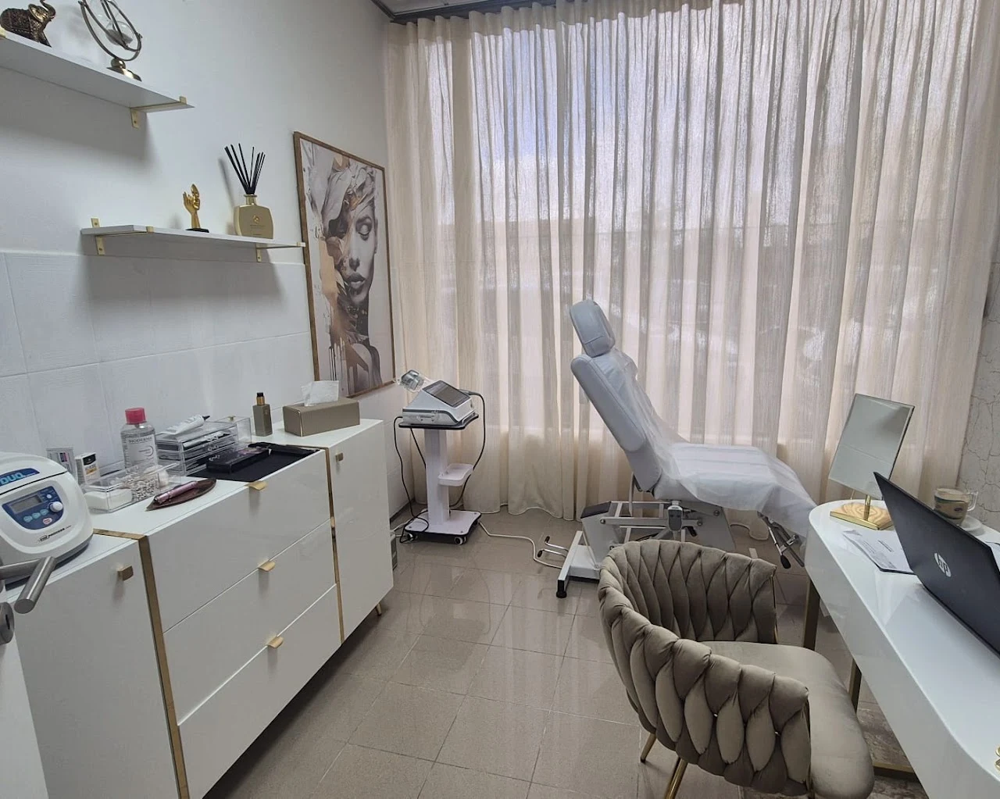

A Harmonização facial, também chamada de Harmonização Orofacial é um conjunto de procedimentos estéticos minimamente invasivos que visam equilibrar e valorizar os traços do rosto, promovendo uma aparência mais harmoniosa e natural. Consiste em técnicas não cirúrgicas personalizadas para corrigir assimetrias, realçar características naturais e melhorar a proporção entre diferentes áreas do rosto, como queixo, mandíbula, maçãs do rosto, lábios e nariz. O principal objetivo é promover equilíbrio, simetria e rejuvenescimento facial, sem alterar a expressão natural.
Na EsteticaMente cada plano de tratamento é individualizado e avaliado em consulta médica de forma a garantir os procedimentos mais adequados para cada paciente, tendo sempre em conta a intenção e expectativa que o fez procurar uma consulta de harmonização facial.
Os procedimentos mais comuns incluem:
Toxina botulínica
Preenchimento facial com ácido hialurônico
Bioestimuladores de colágeno
Fios de sustentação (promovem efeito lifting, melhora a flacidez e contornos faciais)
SkinBooster
Microagulhamento
Saiba mais
- Toxina botulínica
- Preenchimento facial com ácido hialurônico
- Bioestimuladores de colágeno
- Fios de sustentação
- SkinBooster
- Microagulhamento
